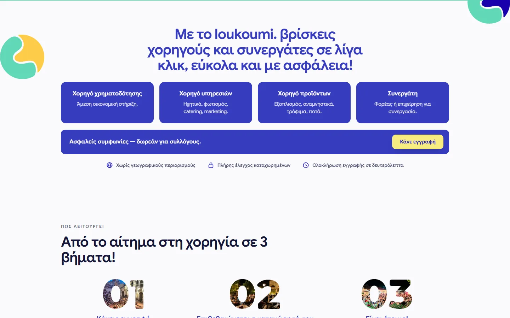
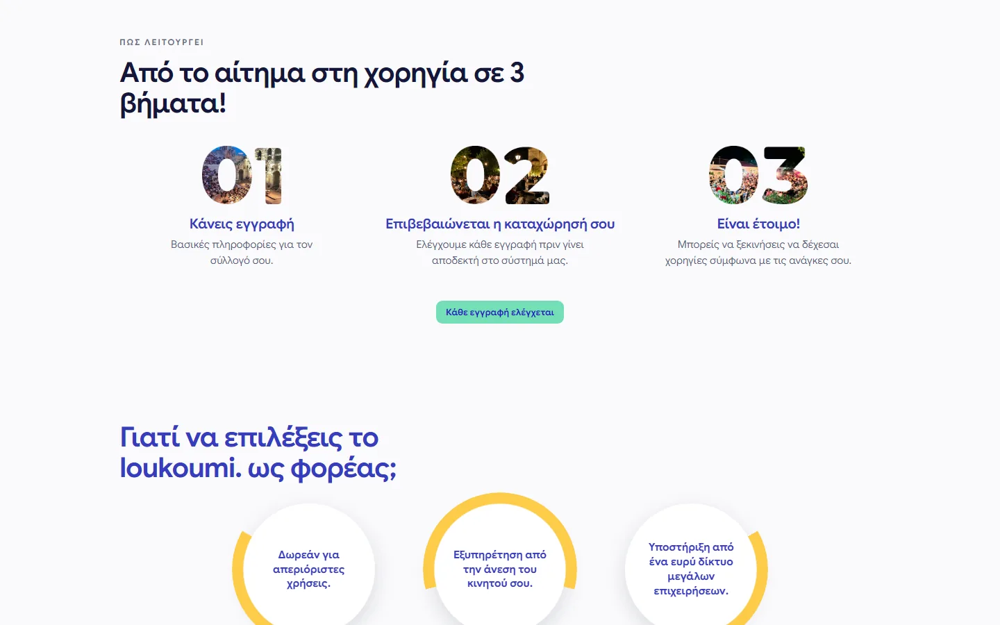
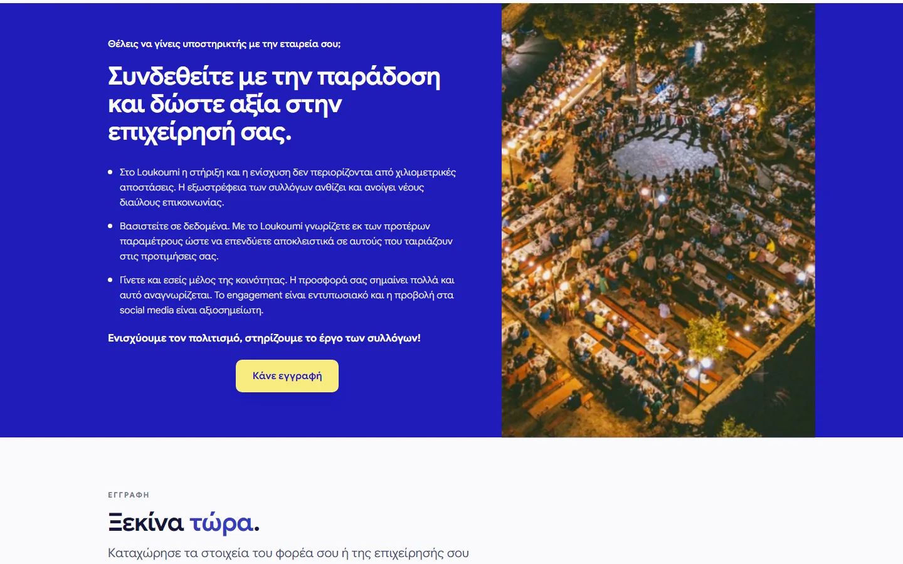
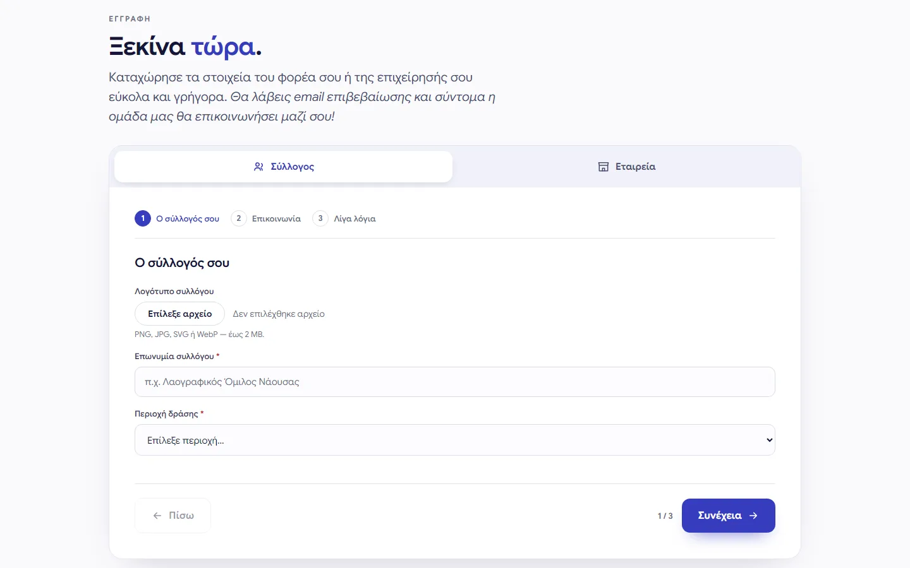
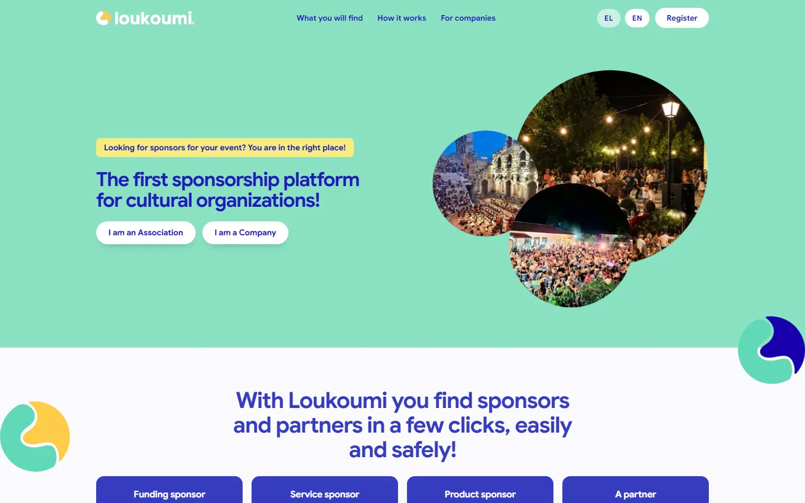
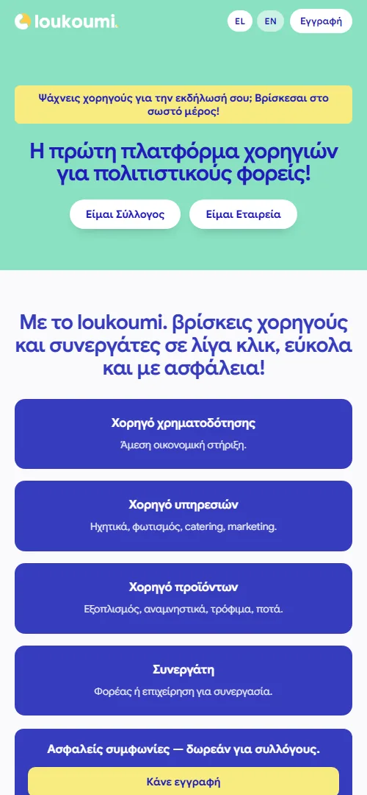

Two flows, one form
Association and company tabs share a single three-step wizard, each asking only the questions its own side can answer.
A two-sided platform that matches Greek cultural associations with the companies willing to sponsor them — money, services, products or a straight partnership. Django, server-rendered, bilingual, and built so that the association on the other end never needs a manual.
Με λίγα λόγια

Greek cultural associations — folk dance groups, local festivals, amateur theatre — run on sponsorship, and they find it the same way they did thirty years ago: someone knows someone. Meanwhile there are companies with a marketing budget who would happily back a local festival and have no idea which ones exist.
Loukoumi is the index that was missing. Both sides register, both sides get verified, and the platform matches them on the three things that actually decide a sponsorship: where you operate, what the association does, and what kind of support is on the table — funding, services, products or a paid partnership.
The hard part of the UX is that an association and a company are answering completely different questions, but neither should be made to feel they are on the wrong website. The registration is a single component with two tabs and two three-step flows, each asking only what its own side can answer — an association names its region and describes what it does; a company picks its industry, the regions it cares about, the themes it wants to be associated with, and what it is offering.
This is Django templates and plain JavaScript, not a SPA. The whole site is one CSS file and one JS file, hashed and served behind Cloudflare. For a page whose job is to be found by a volunteer secretary on a five-year-old phone, that is the right trade: it is crawlable, it loads on a bad connection, and there is no build pipeline standing between a copy change and production.
Association and company tabs share a single three-step wizard, each asking only the questions its own side can answer.
Both sides declare areas of activity and thematic interests, so a company in Epirus sees the festivals it could actually turn up to.
Full Django i18n with a locale URL prefix — every string, form label and validation message is translated, not just the marketing copy.
Nothing goes live automatically. Each registration is checked before it enters the index, which is the whole reason either side trusts it.
PNG, JPG, SVG or WebP up to 2 MB, checked server-side — an association uploads whatever its designer gave it in 2011 and it still works.
Privacy consent is explicit and required; marketing contact is a separate, optional opt-in. Two checkboxes, because they are two different questions.
 Landing — two ways in, association or company
Landing — two ways in, association or company

Four sponsorship types, not just money
From request to sponsorship in three steps
The company side of the pitch
Registration — two flows, three steps each
English locale — same page, full translation
Mobile — how most of them arriveΔύο γραμμές για το τι χρειάζεστε — απαντώ εντός 24 ωρών με τα επόμενα βήματα, χωρίς καμία δέσμευση.
Next project
Full-stack ERP & ticketing platform for a field-services team.
{kind=link}
{kind=link}
{kind=link}
{kind=link}
{kind=link}
{kind=link}